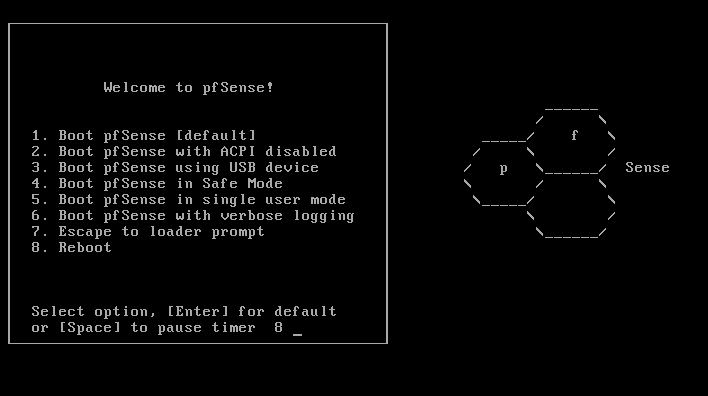
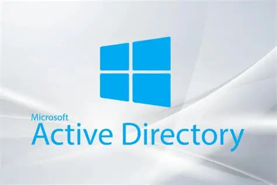
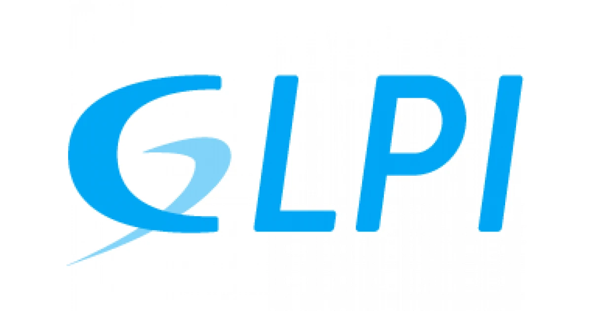
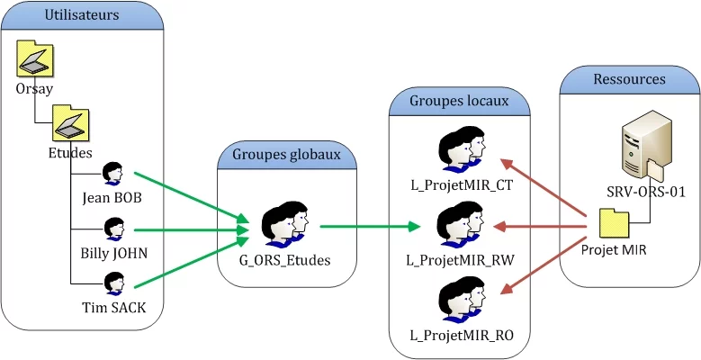
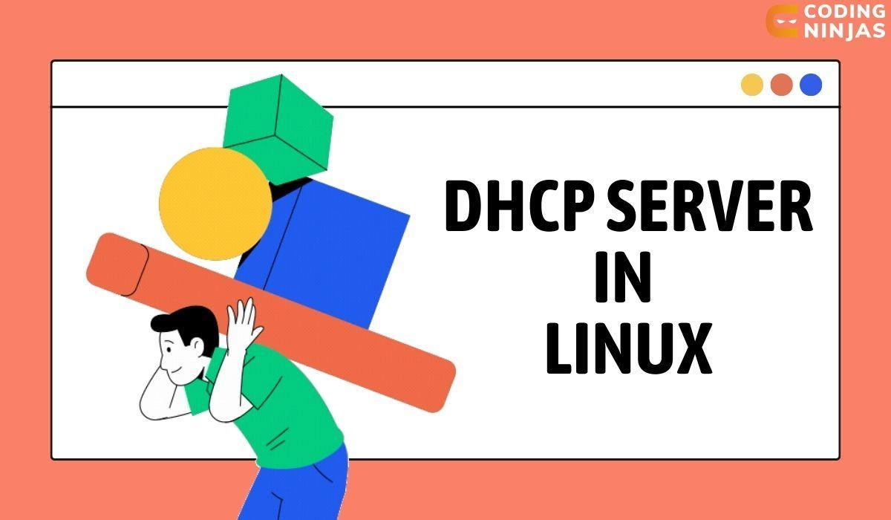
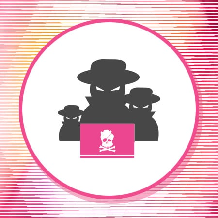

// réalisations techniques
Mes Projets
Administration systèmes, réseaux et sécurité
Chaque projet est documenté et démontre des compétences concrètes acquises en BTS SIO SISR.

Administration systèmes, réseaux et sécurité
Chaque projet est documenté et démontre des compétences concrètes acquises en BTS SIO SISR.






Objectif : Déployer un pare-feu et un proxy pour gérer et restreindre la navigation web en entreprise.
Réalisations :
Compétences mobilisées : Administration pare-feu, gestion de règles réseau, configuration proxy, virtualisation VMware
Lien référentiel : Bloc 2 — Administrer et sécuriser un équipement réseau
Objectif : Surveiller en temps réel l'état et les performances du système informatique pour détecter et alerter en cas d'anomalie.
Réalisations :
Compétences mobilisées : Supervision réseau, configuration Linux, SNMP, alerting, monitoring
Lien référentiel : Bloc 2 — Exploiter, dépanner et superviser une solution
Objectif : Réduire le temps de gestion des comptes utilisateurs et éliminer les erreurs manuelles.
Réalisations :
Compétences mobilisées : Scripting PowerShell, automatisation, gestion Active Directory
Lien référentiel : Bloc 2 — Automatiser les tâches d'administration
Objectif : Déployer et configurer GLPI, solution open source de gestion de parc informatique et de helpdesk, sur un serveur Linux avec une stack LAMP complète.
Réalisations :
Compétences mobilisées : Administration Linux, déploiement d'application web (LAMP), gestion de base de données MariaDB, intégration LDAP/AD, concepts ITIL, gestion de parc informatique
Lien référentiel : Bloc 2 — Maintenir et exploiter l'infrastructure et les services d'un système d'information
Objectif : Mettre en place une gestion structurée des droits d'accès aux ressources partagées en entreprise via la méthode AGDLP (Accounts, Global groups, Domain Local groups, Permissions) sous Windows Server.
Réalisations :
Compétences mobilisées : Administration Active Directory, gestion des droits NTFS/SMB, stratégies de groupe (GPO), structuration des accès réseau, virtualisation Windows Server
Lien référentiel : Bloc 2 — Administrer et sécuriser les ressources d'un domaine Windows
Objectif : Mettre en place un service DHCP centralisé avec relais DHCP sur des machines virtuelles Debian sous VMware Workstation, permettant la distribution automatique d'adresses IP à travers plusieurs réseaux segmentés.
Réalisations :
isc-dhcp-server avec déclaration des plages d'adresses et options réseauisc-dhcp-relay) pour relayer les requêtes DHCP entre les segments réseauCompétences mobilisées : Administration Linux, configuration réseau (interfaces, routage, NAT), service DHCP, DHCP Relay, virtualisation VMware Workstation, segmentation réseau
Lien référentiel : Bloc 2 — Administrer et sécuriser les équipements et services d'un réseau
Objectif : Simuler une attaque de l'homme du milieu (Man-in-the-Middle) sur un service SSH dans un environnement virtualisé sous VMware, puis analyser les vulnérabilités exploitées et mettre en place des contre-mesures adaptées.
Réalisations :
nmap pour identifier les hôtes et services exposésettercap pour intercepter les communications entre le client et le serveur SSHssh-mitm et redirection de flux avec iptables pour capturer les identifiants en clairCompétences mobilisées : Cryptographie (symétrique, asymétrique, hachage), exploitation de vulnérabilités ARP, analyse de trames réseau, administration OpenSSH, sécurisation de services réseau, Kali Linux, ethical hacking
Lien référentiel : Bloc 3 — Cybersécurité des services informatiques